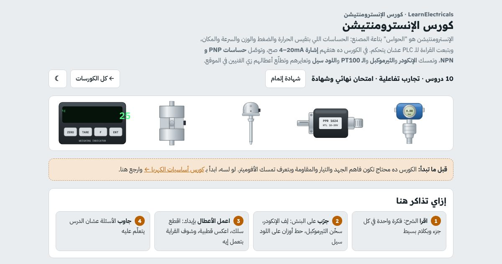

كورس · الحساسات والإشاراتبالعربية
كورس أجهزة القياس
افهم الحساسات والإشارات في أي مصنع، ووصّلها وعايرها واكتشف أعطالها كفني الموقع.
أول درسين متاحان للتجربة

المحتوى
الدروس
بالترتيب، وفي كل درس شرح بسيط وتجارب بيدك وأسئلة.
- ما المقصود بأجهزة القياس؟متاح للجميعاللوب: حساس وترانسميتر وكنترولر وصمّام، وPV وSP والمدى، وقراءة التاجات TT-101
- ما وظيفة أجهزة القياس في المصنع؟
- مِمّ يتكوّن لوب التحكم؟
- جرّب: لوب تسخين خزان
- تمرينلوب التحكم في الحرارة
- ما المقصود بالمدى (Range)؟
- ما معنى التاج TT-101؟
- تمرينفك التاج
- مشكلات من الموقع
- أسئلةأسئلة الدرس
- الإشارات الأنالوج 4–20mA و 0–10Vلماذا 4 لا صفر، وترانسميتر 2 و3 و4 أسلاك، والتحويل إلى القيمة، وقياس تيار اللوب
- لماذا الإشارة تيار لا جهد؟
- لماذا تبدأ من 4 لا من صفر؟
- ترانسميتر سلكين أم 3 أم 4؟
- التغذية 24V والمقاومة 250Ω
- كيف تحوّل الـ mA إلى قيمة؟
- تمرينحاسبة التحويل
- تمرينتمرين التحويل
- محاكي اللوب: أحدث العطل بيدك
- تمرينلوب 4–20 mA
- كيف تقيس تيار اللوب؟
- كيف يُركّب الكابل؟
- كل قراءة خطأ وسببها
- أسئلةأسئلة الدرس
- الحساسات الرقميةالبروكسيميتي والخلية الضوئية والليمت سويتش، وNO/NC، وPNP وNPN مع كارت الـ PLC
- ما أنواع الحساسات الرقمية؟
- NO أم NC؟
- PNP أم NPN؟
- البنش: وصّل الحساس بالـ PLC
- تمرينبنش PNP وNPN
- بماذا يختلف الحساس ذو السلكين؟
- كل عَرَض وسببه
- أسئلةأسئلة الدرس
- الإنكودر ١: الإنكريمنتالالقرص والقنوات A وB وZ، والاتجاه، وPPR، والعدّ x1/x2/x4، والسرعة، وأنواع الخرج
- أين يُستخدم الإنكودر؟
- كيف يعمل الإنكودر من الداخل؟
- جرّب: أدِر الإنكودر
- محاكيإنكودر + سكوب + عدّاد
- ما معنى x1 وx2 وx4؟
- ما أنواع خرج الإنكودر؟
- هل يلحق الكارت بالعدّ؟
- تمرينالاتجاه والتردد والعدّ
- مشكلات من الموقع
- أسئلةأسئلة الدرس
- الإنكودر ٢: الأبسليوت والتركيب والأعطالالـ Gray code، وSingle-turn وMulti-turn، وSSI وProfinet، والتركيب والشيلد، ولعبة الأعطال
- إنكريمنتال أم أبسليوت؟
- لماذا يستخدم الأبسليوت الـ Gray code؟
- تمرينقرص أبسليوت 4 بت
- كيف يرسل الأبسليوت قراءته؟
- كيف يتم الهومينج؟
- كيف يُركّب الإنكودر ميكانيكيًا؟
- الكابل والتشويش
- كل عطل وحلّه
- تمرينلعبة: اكتشف عطل الإنكودر
- أسئلةأسئلة الدرس
- حساسات الحرارة ١: الثيرموكبلالأنواع K وJ وT وS، وتعويض الطرف البارد CJC، وكابل التعويض، والألوان، والأعطال
- كيف يقيس الثيرموكبل الحرارة؟
- ما أنواع الثيرموكبل؟
- البنش: سخّن، واعكس، واقطع
- تمرينبنش الثيرموكبل
- لماذا يلزم كابل التعويض؟
- كيف تميّز الموجب من السالب؟
- الجنكشن والثيرموويل
- تمرين: من mV إلى درجة
- تمرينتمرين الثيرموكبل
- كل قراءة خطأ وسببها
- أسئلةأسئلة الدرس
- حساسات الحرارة ٢: PT100 وRTD وNTC100 أوم عند الصفر، وتوصيلة 2 و3 و4 أسلاك وخطأ السلك، والترانسميتر، وNTC وPTC
- ما معنى PT100؟
- الدقة: Class A و B
- لماذا توجد 2 و3 و4 أسلاك؟
- تمرينبنش الـ PT100
- التسخين الذاتي وترانسميتر الرأس
- كيف تفحص الـ PT100 بالأفوميتر؟
- تمرينمن الأوم للدرجة
- الـ NTC والـ PTC
- تمرينمنحنى NTC وPT100
- كل قراءة خطأ وسببها
- أسئلةأسئلة الدرس
- اللود سيل (Load Cell) والميزانالإسترين جيدج والقنطرة، وmV/V، وكابل 4 و6 أسلاك، ومعايرة الميزان، وتشخيص اللود سيل بالأفوميتر
- كيف يستشعر اللود سيل الوزن؟
- القنطرة والـ mV/V
- تمرينبنش اللود سيل
- ما أنواع الخلايا؟
- 4 أسلاك أم 6 أسلاك؟
- عدة خلايا معًا
- المعايرة: Zero وSpan
- تمرينعاير الإنديكيتور
- كيف تفحص الخلية بالأفوميتر؟
- تمرينشخّص الخلية بالأفوميتر
- كل عَرَض وسببه
- أسئلةأسئلة الدرس
- الضغط والمستوى والتدفقترانسميتر الضغط وDP، والمستوى بالضغط والرادار، والتدفق المغناطيسي والفورتكس والكوريوليس
- بكم طريقة يُقاس الضغط؟
- كيف تقيس المستوى بالضغط؟
- تمرينخزان المستوى
- هل توجد طرق أخرى للمستوى؟
- بماذا يُقاس التدفق؟
- تمرين: اختر الجهاز الصحيح
- تمريناختر الجهاز
- كل قراءة خطأ وسببها
- أسئلةأسئلة الدرس
- المعايرة وتتبّع الأعطال + الامتحان النهائياللوب تشيك، وجدول As-found / As-left، والكاليبريتور، ولعبة أعطال الموقع، والامتحان النهائي
- ما المقصود باللوب تشيك؟
- ماذا يفعل الكاليبريتور؟
- المعايرة على 5 نقاط
- تمرينعاير PT-101
- كيف تفكّر في أي عطل؟
- تمرينلعبة: أعطال الموقع
- أسئلةأسئلة الدرس
- امتحانالامتحان النهائي
المحاكيات في هذا الكورس
افتح أي محاكٍ من هنا أو من داخل الكورس.
الكورس بالأرقام
10دروس من اللوب حتى المعايرة
4–20mA: الإشارة التي ستقابلها في كل مكان
1امتحان نهائي وشهادة إتمام
+30تجربة وتمرين وسؤال تُصحَّح تلقائيًا
أجهزة القياس
ماذا ستتعلّم
- تقرأ اللوب والتاجات: TT وPT وFT، وPV وSP والمدى
- تحوّل 4–20mA إلى القيمة الحقيقية، وتعرف لماذا تبدأ من 4
- توصّل ترانسميتر 2 و3 و4 أسلاك توصيلًا صحيحًا
- تميّز بين PNP وNPN وتوصّلهما على كارت الـ PLC
- تفهم الإنكودر الإنكريمنتال والأبسليوت وتكتشف أعطاله
- تختار الثيرموكبل وPT100 وتوصّلهما، وتعرف خطأ مقاومة السلك
- تعاير الميزان وتشخّص اللود سيل بالأفوميتر
- تُجري لوب تشيك وتملأ جدول As-found / As-left
لمن
لمن هذا الكورس
- لفنيي الصيانة والإنسترومنت في المصانع
- لطلاب هندسة الكهرباء والميكاترونيكس والتحكم
- لمن يعمل في الكهرباء ويريد دخول مجال أجهزة القياس
- لمن يتعامل مع الـ PLC ويحتاج إلى فهم الإشارات الداخلة إليه
أسئلة شائعة
قبل أن تسأل
هل أحتاج خلفية قبل الكورس؟
يجب أن تفهم الجهد والتيار والمقاومة وتعرف استخدام الأفوميتر. إن لم تكن كذلك، فابدأ بكورس أساسيات الكهرباء.
هل الكورس مخصص لماركة معيّنة؟
لا. يشرح الكورس الفكرة المشتركة بين كل الماركات، مع أمثلة من الأجهزة المنتشرة في السوق.
هل توجد شهادة؟
نعم. عند إتمام كل الدروس والامتحان النهائي وأنت مسجّل الدخول، تحصل على شهادة إتمام بكود تحقق وQR.
هل الكورس مجاني؟
أول درسين متاحان لكل من لديه حساب، وتُفتح بقية الدروس عند شراء الكورس.
هل يعمل على الموبايل؟
نعم. كل البنشات والتجارب تعمل على الموبايل والتابلت والكمبيوتر.
هل أنت جاهز لبدء كورس أجهزة القياس؟
أول درسين متاحان للتجربة. ابدأ الآن وتابع على راحتك، ويُحفظ تقدّمك.